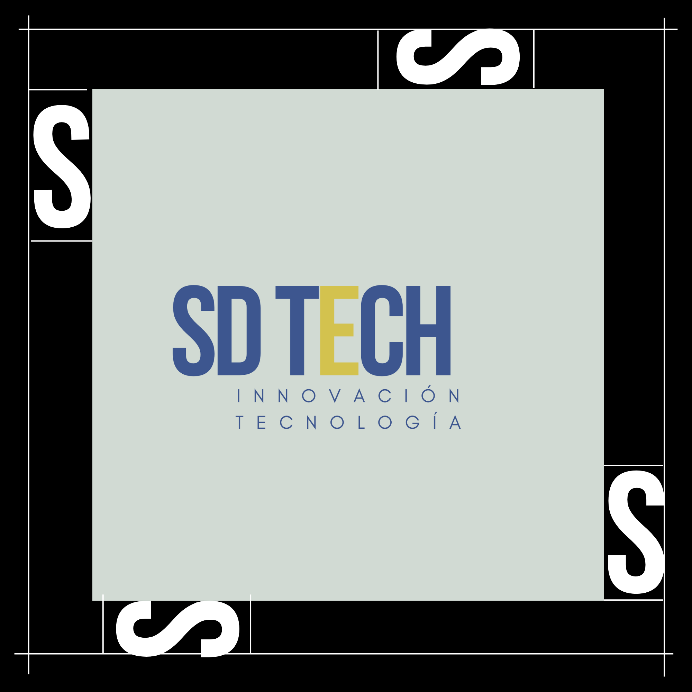
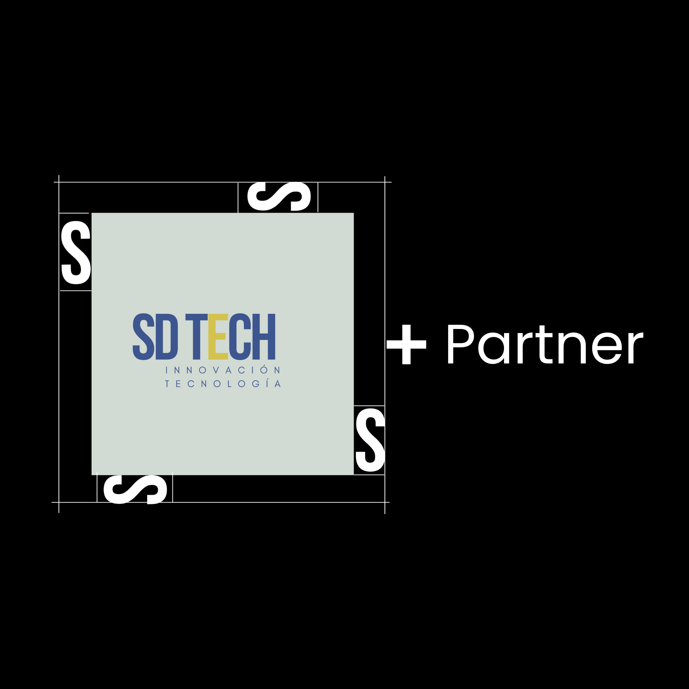
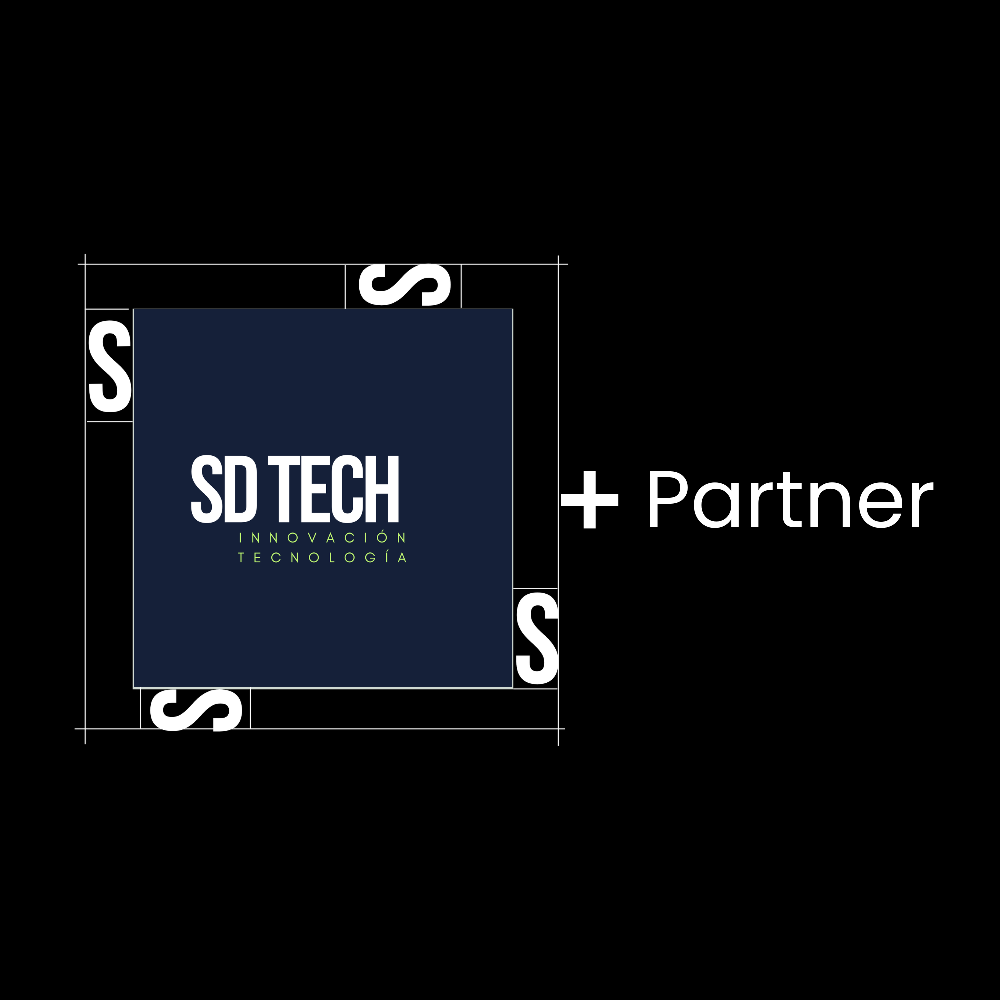

Paleta de colores
La identidad visual de SD TECH está construida a partir de una paleta de colores que transmite confianza, seguridad, innovación y tecnología. Estos colores permiten mantener una comunicación visual clara, moderna y profesional en todos los medios digitales y gráficos de la marca.
Tipografía
Títulos
La tipografía de SD TECH busca transmitir modernidad, claridad y profesionalismo, características clave dentro del sector tecnológico. Para los títulos y encabezados se recomienda el uso de una tipografía sans serif moderna, ya que aporta una apariencia limpia, tecnológica y contemporánea, permitiendo destacar la información más importante. Para los textos secundarios y párrafos se utiliza una tipografía sans serif más ligera, que facilita la lectura en pantallas y mejora la experiencia del usuario. La combinación entre títulos y texto de apoyo permite mantener una jerarquía visual clara y una comunicación coherente en todos los contenidos de la marca. El uso consistente de la tipografía refuerza la identidad visual de SD TECH y asegura una apariencia profesional en todos los medios digitales y gráficos.
Texto
glacial indifference utilizada para párrafos y contenidos extensos, garantizando una lectura clara y cómoda. Estas tipografías permiten mantener una identidad visual moderna y coherente con el concepto tecnológico de la marca.
Tamaño y Area de Reserva
El área de reserva es el espacio mínimo que debe mantenerse alrededor del logotipo para evitar que otros elementos gráficos interfieran con su visibilidad o legibilidad. En el caso de SD TECH, el área de reserva se define tomando como referencia el ancho de la letra “S” del logotipo. Este espacio debe mantenerse libre alrededor de toda la marca para asegurar una correcta presentación y mantener la claridad visual. Se recomienda que el tamaño mínimo del logotipo no sea inferior a 200 px de ancho, con el fin de garantizar una correcta legibilidad en medios digitales. Si se requiere utilizar el logotipo en tamaños más reducidos, como en iconos de redes sociales o favicons, se recomienda utilizar una versión simplificada o tipográfica del logotipo, evitando problemas de reducción y manteniendo la coherencia visual de la marca.

WORDMARK + PARTNER LOGO


Estilo de imágenes
Describe el estilo visual de las imágenes.
Aplicaciones de marca
Redes sociales
Tarjetas
App o Web
Recursos
Descarga logos y archivos de marca aquí.